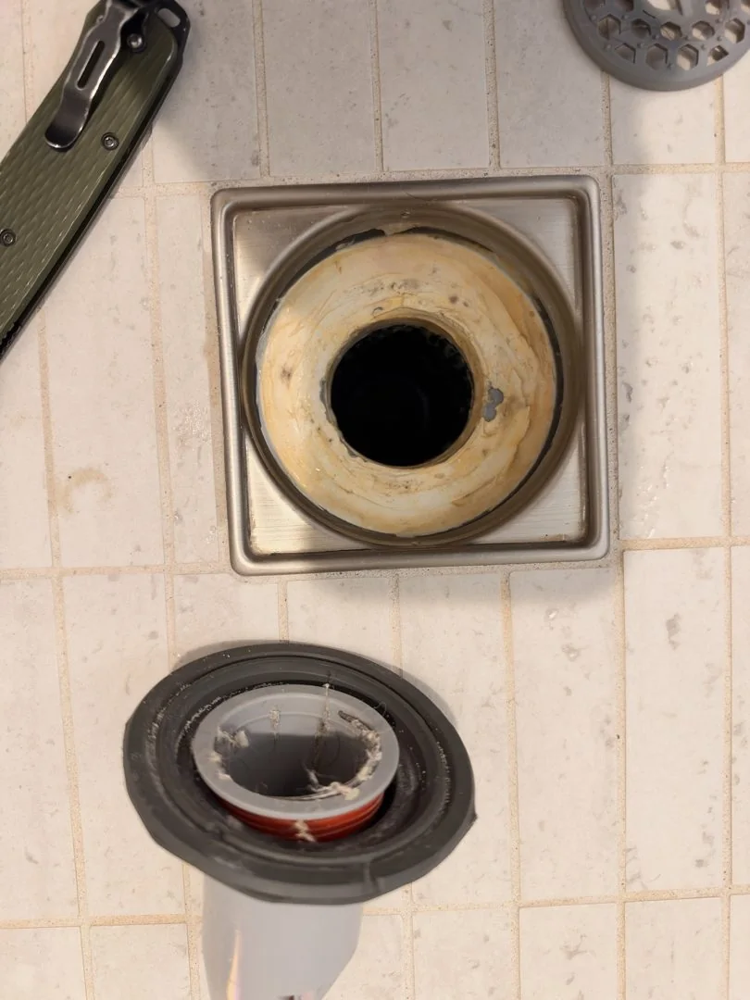

The timing of the visit mattered
Stan first saw the floor after the shower had been unused for about a day. That scan showed nothing unusual. We returned around two hours after the next shower, while the surface was still drying. The infrared image then showed a cool band running through the drain toward the walls. The corners had already dried.
In the ordinary photographs, the darkened, crumbling grout follows much of that same band. Holding the two observations together pointed to low or flat areas where water lingered. The photographs record surface conditions. The shape of the concealed mortar bed remains an inference.
Looking inside the drain
The owners' plumber had already checked the trap and venting. With the grate and insert lifted, we could see discolored sealant packed around the drain body. Its surface crumbled under light pressure. We documented it as a second area of concern in addition to the uneven drying.
We also measured the exhaust fan. Raising its setting increased the measured airflow from about 57 to about 80 cubic feet per minute. That was a change we could make and measure during the visit. The question about the floor slope remained.

What the test could establish
We attempted a standing-water test, but the plug failed to seal. The water drained away. We recorded that result as inconclusive. The ceiling below the shower showed no staining or unusual thermal pattern during the visit, and we had no moisture-meter readings of the concealed assembly.
What went back to the homeowners
The homeowners received a written account of the drying pattern, grout condition, drain inspection, airflow readings and limits of the tests. The accompanying cutaway explains how water is intended to reach a drain. It is a teaching illustration. The evidence from this visit is in the photographs and readings taken at the house, and the work concluded with the assessment.